Barav was known (see the "testimonials" section) as a sharp tactician. We will give here some of his games -- this is an continually-updated list. Unless otherwise noted, the source is Ami Barav's collection . The games are arranged in chronological order, with those with unknown dates given last.
Game 1
This game was the third game in the match again Churgin in Palestine in 1926, before Barav arrived to study in Berlin. Barav ends the game with a very pretty combination in his usual sacrificial style. Churgin was a strong Tel Aviv player who, for example, won joint 2nd-5th place in the Tel Aviv Club championship, 1928 (as reported in Doar Ha'yom on 30.1.1929 p. 4).
Barav, Israel -- Churgin
King's Indian [E62]
Match, game 3, 1926
Annotations: Fritz 8, Avital Pilpel, and Shahar Gindi
1.d4 Nf6 2.Nf3 d6 3.c4 g6 4.g3 Bg7 5.Bg2 Nc6 6.0–0 0–0 T his is a well known theoretical position with over 10,000 games continuing 7.Nc3. only a handful continued like Barav, but there is nothing wrong with his move-- SG 7.Bg5 e5 a naive approach that leads the game back to lines where White plays Bg5 after 7.Nc3 e5 8. d5 Ne7 9. Bg5. Harassing the bishop on g5 either with h6 or Ne4 can benefit Black and leads to easier equality - SG. 8.d5 Ne7 9.Nc3 Bf5 this was Black's last chance for h6 and while Bf5 does fight for the center, the h6, Nd7, f5 plan seems better - SG 10.Qd2 Re8 11.Rfe1 Nd7? Surrendering the center without a fight - SG 12.e4 Bg4 13.h3 Bxf3 14.Bxf3 f5 without the light square bishop these attacks don't tend to work - SG 15.h4 Nf6 16.Kg2 Qd7 17.Rh1 Rf8 18.h5 Rf7 19.hxg6 hxg6 20.Rh2 fxe4? Black is ruining his structure and White controls the light squares- SG 21.Nxe4 White is winning - F8
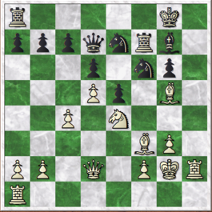
21... Ng4 22.Bxg4 Qxg4 23.Qd3 Raf8 24.Rh4 Qd7 25.Rah1 25.g4! prevents any counterplay - SG Rf3 26.Qxf3? Better was an queen move, leaving White with the initiative -SG. 26...Rxf3 27.Kxf3 Nf5 28.Rh7 Nd4+ 29.Ke3 Qg4? This mistake allows White to finish the game with a nice combination - AP
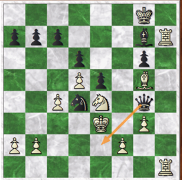
30.Rxg7+ ! Kxg7 31.Rh7+ !! Black Resigns ( 1–0 )
Game 2
This game is the next one of the same match. Barav gives only one note -- he didn't like his own 25th move (Fritz thinks it is fine), but a bit later, in a winning position, finds a clever sacrificial combination that gives him a clearly winning position.
Barav, Israel -- Churgin Modern Defense [B06] Match, game 4, 1926 Annotations: Fritz 8, Barav, and Shahar Gindi
1.d4 Nf6 2.g3 g6 3.Bg2 Bg7 4.e4 switches to a Pirc defense -SG 4...d6 5.Ne2 0–0 6.0–0 Nc6 7.f4 enterprising play and Black gets into trouble quickly - SG 7... e5 8.d5 Ne7 8...Na5 is better - SG 9.fxe5 dxe5 10.c4 it's hard to blockade White's center. The knight is a better blockader but if the knight is placed on d6 it will have to watch out for c5 constantly -- SG 10...Qd6 11.Kh1 Ng4?! 12.h3 Nh6 13.b3! f5 14.Ba3 Qf6 15.Nbc3 a6 16.Qd3 Nf7 17.Rad1 Bd7 18.Na4! Bxa4? 19.bxa4 Barav assessed the consequences of this exchange much more accurately than Churgin who collapses quickly - SG Nh6 20.Qb3 Rae8 21.Qxb7 Qg5 22.Qxc7 Rf7 23.d6 Nd5 24.Qc6 Nf6 25.exf5 ? Barav's note 25...Nxf5 26.Bd5 Qh5 27.Bxf7+ Kxf7 28.Qf3 Qxh3+ 29.Kg1 Ng4 30.Qh1 Qxh1+ 31.Kxh1 Ke6 32.Rb1 h5 33.Rb6 h4
Match, Game 5, 1926 Annotator: Deep Fritz 8 (F8) & Avital Pilpel (AP)
1.e4 e6 2.d4 d5 3.Nc3 Bb4 4.Bd3 dxe4 5.Bxe4 c5 6.Nge2 last book move (F8) Nc6 7.Be3 cxd4 8.Bxc6+ bxc6 9.Nxd4 Qc7 10.Qf3 Bb7 11.0–0 Bd6 12.Qh3 Nf6 13.Rad1 Ba6 14.Rfe1 14...Be7? 14..0–0–0 was much better (F8) 15.Nxe6 White is winning (F8) fxe6 16.Qxe6 Kf8
17.Bf4! Qb7 18.Ne4? 18.Rd6 Re8 19.Rxc6 Bc5 20.Bd6+ Bxd6 21.Qxd6+ Kg8 22.Rxe8+ Nxe8 23.Qe6+ Qf7 24.Qxf7+ Kxf7 25.Rxa6 Nf6 26.Rxa7+ Kg8 wins for White (F8) . 18...Qc8 19.Qe5 .Nxe4? 20.Qxe4 Better was 20.Rxe4 Bf6 21.Qh5 Kg8 and White wins. (F8) 20...Bf6 21.Qb4+? 21.Rd6 (F8) 21...Kf7 The position is now equal (F8) 22.Qb3+ Kg6 23.Qg3+ Kf7 24.Qb3+ Kg6 25.Qg3+ Kf7 26.Rd6 Re8 27.Qb3+ Kg6 28.Qg3+ Kf7 29.Qb3+ Kg6 30.Qg3+ Kf7 31.Red1 Re7 32.Qb3+ Kg6 33.Qg3+ Kf7 34.Qf3? Gives the opponent counterplay (F8). In the skirmish that follows, both Barav and Churgin play less than ideally, probably due to time pressure. (AP) 34.Qb3+ Kg6 35.Qg3+ Kf7 is a draw by perpetual check (F8).
34...Qe8? Better is 34...Be2 and Black would have gained the upper hand 35.Qb3+ Kg6 (F8). 35.Qb3+ Kf8? Better is 35...Kg6 36.Qg3+ Kf7 37.Qb3+ Kg6 38.Qg3+ Kf7 39.Qb3+ and allowing perpetural check (F8). 36.Be3? Rb8? 37.Qa3? Better is 37.Rxf6+ gxf6 38.Bh6+ Rg7 39.Qg3 and White is much better (F8) . 37...Bc4 38.b3 Bd5 39.c4 Bf7 40.Qa5 Reb7 41.Bc5 Kg8 Black is now winning (F8). 42.Re1 Qc8 43.Qa4 Rc7 44.Rd3 Qf5 45.Qa5 Qxd3 46.Qxc7 Re8 47.Rxe8+ Bxe8 48.g3? better was 48.h3 h5 49.Qc8 Qe4 50.Bxa7 c5. (F8) but Black is still winning (AP) 48...Bd7 49.h4 h5 50.Qf4 Bg4 51.Kg2 Qb1 52.Qb8+ Kh7 53.Qxa7? Qe4+ 54.Kh2 Bh3 and White resigned ( 0–1 ).
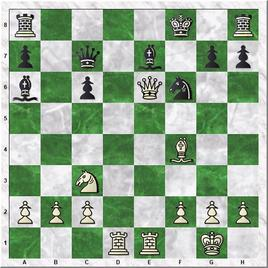
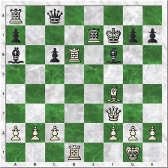
Game 4
Here is the final game of the match, with a similar opening, where Churgin sacrifices a piece for pawns, reaching an interesting ending. Churgin tries, of course, to queen the pawns, while Barav attempts to win them with his extra piece and prevent them from queening. Barav then took advantage of Churgin's blunder in an objectively drawn -- but very unbalanced -- position, and won.
Barav, Israel -- Churgin
1. d5 d5, unusual lines [D00]
Match, game 6, 1926
Annotations: Fritz 8 and Sahahr Gindi
1.d4 Nf6 2.f4 d5 3.e3 Bg4 4.Nf3 e6 5.Bd3 Bd6 6.Nbd2 c6 better is 6...c5 - SG 7.0–0 Nbd7 8.Qe1 Qc7 9.Ne5 Bh5 10.c4 0–0–0 11.c5 Be7 12.b4 allows Barav to show his fine attacking skills - SG Ne8 13.b5 Nxe5 14.fxe5 f6 15.bxc6 fxe5? 15...Qxc6 is better - SG 16.Nb3! e4 17.cxb7+ Kb8 18.Bb5! Nf6 19.Bd2 Ng4 20.Qg3 winning, but 20.Rf4 would be even better - SG 20...Qxg3 21.hxg3 Rdf8 22.c6 Bd6 23.Nc5 Bxc5 24.dxc5 Be8 25.Rab1 Rxf1+ 26.Kxf1 Bxc6 27.Bxc6 Ne5 28.Bb5 Kxb7 29.Ba5 h5 30.c6+? Barav wants to win tactically, but ruins his winning position - SG 30...Nxc6 31.Ba4+ Ka6 32.Bxc6 Kxa5
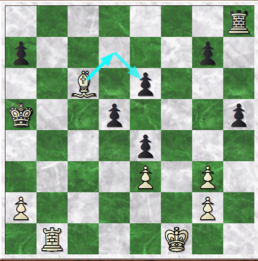
33.a4? 33.Bd7 e5 (33...Rh6 34.Rb5+ Ka6 35.a4) 34.Rb5+ Ka6 35.Rxd5+ wins easily - SG 33...a6 34.Rb7 Rc8 35.Bd7 Rc1+ 36.Kf2 Rc2+ 37.Kg1 e5 38.Be8 Rc1+ 39.Kh2 d4 40.Bxh5 Kxa4 41.exd4? 41.Rxg7 wins - SG exd4 42.Rd7 Rc4? 42...d3= - SG 43.Bf7 Rb4 44.g4 a5 45.g5 e3 46.Kg3 Ka3 47.Kf3 a4 48.Bg8 Kb2 49.Rxg7 Kc3? 49...Rb8= - SG 50.Rc7+ Kd2 51.Bh7 Rb3 52.Rc2+ Kd1 53.Re2 Rb5?? 53...d3 is still a theoretical draw - SG, forcing the exchange of the bishop for the two pawns (53. Bxd3 Rxd3 54.Rxe3 Rxe3+ 55.Kxe3 a3) and reaching a drawn queen and pawn vs. queen ending (56.g6 a2 57.g7 a1=Q 58.g8=Q). 54.Bc2+ now White is winning - F8. 54... Kc1 55.g6 a3 56.Bd3 Rb6 57.g7 Rb8 58.Bh7 d3 59.Bxd3 Rg8 60.Rc2+ Kd1 61.Kxe3 Rxg7 62.Ra2 Rg3+ 63.Kd4 Kc1 64.Kc3 Black Resigns ( 1–0 ).
Game 5
The following game was played in a match with Nachum Labunsky in a match in 1926 in Palestine. This is the only game of the match which survived.
Labunsky, Nachum -- Barav, Israel Caro-Kann Defense, Exchange Variation (B12)
Annotations: Shahar Gindi Match, 1926 1.e4 c6 2.d4 d5 3.exd5 cxd5 4.Bd3 Nc6 5.c3 Nf6 a well-known theoretical position later popularized by Bobby Fischer - SG. 6.h3? Passive. Black takes the center in the next move - SG. 6...e5! 7.dxe5 Nxe5 8.Nf3 Bd6 8...Nxd3+ immediately equalized easily. Barav waits one move - SG. 9.Bg5 Nxd3+ 10.Qxd3 Qe7+ 11.Qe3 Qxe3+ 12.Bxe3 Bf5 13.0–0 Bd3 14.Re1 0–0 15.Nbd2 Rfe8 draw agreed ( 0.5-0.5 )
Game 6
This game shows a nice (forced) seven-move mating combination by Barav. While not particularly difficult to see in retrospect, it is always harder to see it in advance!
Annotations: Fritz 8, Shahar Gindi and Avital Pilpel 1.d4 d5 2.e3 e6 3.Bd3 c5 4.c3 The Colle system, which is basically a reverse Slav defense is a nice system for a player who does not want to be involved in a theoretical battle and keeps a lot of material on the board. The way Barav plays it, without committing to Nf3, allows him to return to his beloved stonewall structure - SG. 4...Nf6 5.Nd2 c4? This releases the tension in the center and is especially bad when the bishop can retreat to c2 - SG. 6.Bc2 b5 7.f4?! Dogmatically returns to the Stonewall; 7.e4 was better - SG. 7...Bb7 8.Nh3 Nbd7 9.0–0 Bd6 10.Nf3 0–0 11.Ne5 h6?! 12.Bd2 a5 13.g4 justified after Black played h6 - SG. 13...Nh7? 13...Ne4! keeps the balace - SG. 14.g5! Bxe5 15.dxe5 hxg5? The losing mistake to a nice attack . It is likely Barav now saw the mate in seven, as it is forced - AP.
A game played in 1928 against th The scoresheet from Ami Barav's collection was corrected with H. Kasimov's help. Adeler, Erhard - Barav, Israel English (A13) S. K. Springer (Berlin), Jan. 29th, 1928
Annotations: Shahar Gindi. 1. b3 d5 2. Bb2 e6 3. Nf3 Nf6 4. e3 Bd6 5. c4 c6 6. Be2 Nbd7 7. d4 in a peculiar move order we have reached a normal Slav defense position - SG. O-O 8. Nbd2 Ne4 9. Qc2 f5 Stonewall structure - SG. 10. Nxe4? allows Black to quickly seize the initiative - SG. 10...fxe4 11. Nd2 Qg5 12. g3 e5 13. Rd1 exd4 14. Bxd4 Ne5 15. Bc3 Bf5 16. Bxe5 Bxe5 17. cxd5 cxd5 18. Qc5 Be6 19. O-O b6 20. Qb5 Rac8 21. Rc1 h6 White's king is less safe and so Black should play more aggressively. 21...Rxc1 22.R xc1 Qf6 23.Rf1 Rc8 with advantage - SG. 22. Rc6 Rxc6 23. Qxc6 Qe7 24. Ba6 Qd6? this concedes almost all of Black's advantage - he does have the bishop pair, but White has no real weaknesses while d5 is weak - SG. 25. Qxd6 Bxd6 26. Rc1 Bc5 27. Rd1 Bg4 28. Rc1 Bf5 29. Bb7 Be6 30. Kg2 Rf7 31. Ba6 Bf5 32. Nb1 Bg4 33. Nc3 Bf3+ 34. Kg1 Ba3 35. Rb1 Rc7! 36. Nb5 Rc2! in the ending, Barav continues to play tactically - SG. 37. Bb7! but objectively White is fine - SG. Bc5 38. Bxd5+ Kf8 39. Bc4 a6 40. Nc7 a5 41. Ne6+ Ke7 42. Nxg7 a4 two pawns down, Barav creates a dangerous passer - SG. 43. Bb5? a3! t he a-pawn had to be contained; now Black is winning - SG. 44. b4 Bxb4? 44.Rxa2 wins - SG. 45. Rxb4? Rc1+ 45...Rb2!! wins a whole rook in a unique combination of back rank and advanced a pawn:
In the game, White was never able to contain the a pawn - SG. 46. Bf1 Be2 47. Rxe4+ Kf7 48. Nf5 Bxf1 49. Nd6+ Kf8 50. Rf4+ Ke7 51. Nf5+ Kd7 52. h4 Bc4+ 53. Kg2 Bxa2 54. Ra4 Bd5+ 55. e4 Bxe4+ 56. Rxe4 a2 57. Re7+ White resigns ( 0-1 ).
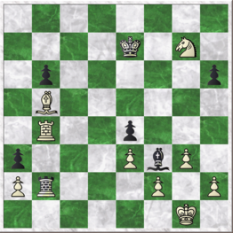
Game 8
This game is from Ami Barav's collection of his father's games. Once more, Barav is out for tactics, looking for the mating attack -- and finding it. Koch was 4-time Berlin champion (1927, 1933, 1946 and 1951). Barav, Israel – Koch, Berthold Irregular Opening (A00)
Berlin, S. K. Springer winter tournament, Feb. 1928 Annotations: Shahar Gindi 1. d4 Nf6 2. e3 e6 3. Bd3 b6 4. Ne2 Bb7 5. O-O c5 6. c3 cxd4 7. exd4 Be7 8. Nd2 O-O 9. f4 Nc6 10. Nf3 Rc8 11. Ng3 h6 12. Ne5 Bd6?! White has been building up without interference for several moves, this move further hinders Black's ability to prepare for an attack -- SG 13. Qe2 Qc7 14. Bd2 g6 15.ae1 Kg716. f5! White's army is fully targeted toward Black's king and the f5 break decides -- SG. Ne7 17. fxe6 fxe6 17…dxe6 18.Rxf6! Kxf6 19.Bxh6 and the king is helpless -- SG. 18. Nxg6 ( 18.Bxg6 is better-- Barav) 18.Bxg6 Nxg6 19.Nh5+ Nxh5 20.Qxh5 wins: the knight on e5 prevents the Bxh2+ resource that Black had in the game -- SG. 18… Bxg3? 1 8…Nxg6! 19.Nh5+ Nxh5 20.Qxh5 Bxh2+! 21.Kh1?! Bxg2+! 22.Kxg2 Qg3+ 24. Kh1 Qxd3= - SG 19. Nxe7 Bxe1
Now White is winning - F8 36...Bh6 37.Be6 Bg5 38.a5 Bh4 39.Qg2 Bf2+ 40.Kh1 Bd4 41.Ra3? Rb8? Black missed his chance: 41... Qf4! draws, due to the threat of Qc1+ (41... Qf4 42. Rg3 Qc1+ 43. Kh2 Qf4 =) - F8. 42. Rb3
This game ia another game played against Erhad Adeler. As usual, Barav conducts the attack brilliantly. Barav, Israel - Adeler, Erhard Modern Defense [B06] S. C. C. [Sports Club Charlottenburg] - Werner Siemens Chess Club, 10.03.1928 Annotations: Fritz 8 and Shahar Gindi 1.d4 g6 2.e4 Bg7 3.f4 very unusual. 3.Nc3 is usually played to prevent 3...d5 - SG. 3...c5 4.c3?! Nf6 5.e5 Ne4 6.Bd3 f5? 6... d5- F8; 'a very unusual opening' - SG. 7.d5 d6 8 .e6 Now Black has to play precisely - SG.
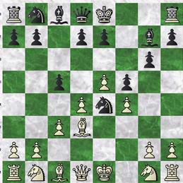
8... Qa5 ...and he didn't. Necessary is 8...0-0 9.Nf3 Nf6 10.c4 b5 with an unclear position - SG. 9.Nd2 Nxd2 10.Bxd2 Na6 11.Nf3 b5 12.c4 Nb4?! 13.0–0 Qb6 14.Bc3 Bxc3 15.bxc3 Nxd3 16.Qxd3 bxc4 17.Qc2 17.Qxc4? Ba6. The c4 pawn just harms Black, leaving his bishop locked - SG. 17...Ba6 18.Rab1 Qa5 19.Rb2 0–0 20.Rfb1 Black's position is difficult, but in the next few moves his inaccuracies make his retreat even further to a lost cramped position - SG. 20...Qc7 21.Qa4 Bc8 22.h4 a5 23.h5 gxh5 24.Qd1! Now White has a winning position - F8; the d5 e6 pawn wedge cramps Black so that he cannot mobilize any defenses to his poor king - SG. 24... Rf6 25.Ng5! h6 26.Qxh5! Kg7 27.g4! Ba6 28.Nf7 Rg8 29.gxf5 Kh7+ 30.Kf2 Qc8 31.Ng5+ Kh8 32.Ne4 Qf8
A quick "crime and punishment" game, where Barav (Black), already in a better position, takes advantage of his opponent's blunder.
Kunerth, W. - Barav, Israel Two Knight's Defense w/ 4. d3 [C55]
S. K. Werner Siemens - S. C. C. [Sports Club Charlottenburg] league match, Rd. 3, 27.04.1928 Annotations: Fritz 8 and Avital Pilpel
1.e4 e5 2.Bc4 Nf6 3.Nc3 Nc6 4.Nf3 Nxe4 5.Nxe4 d5 6.Bxd5 Qxd5 7.d3 Bg4 8.c3 0–0–0 9.Be3? - F8; Barav, already in a much better position, is quick to take advantage of this blunder - AP.
The following game is another example of 'crime and punishment'. White did not play well and found himself a piece to the bad. Barav (Black) could have won in many ways. But he chose the most elegant method: having both his bishops aiming at the enemy king and his rook on the same file as the opponent's queen, he launches a sacrificial attack ending in a nice mate. Abrahamson, Erwin - Barav, Israel Vienna Game [C27] Bar Kochba -- S. C. C. [Sports Club Charlottenburg] league match, 4/7/1928 Annotations: Fritz 8, Shahar Gindi, and Avital Pilpel
1.e4 e5 2.Bc4 Nf6 3.Nc3 Nxe4? the critical line is 3...Qh5 - SG. 4.Nxe4 d5 5.Bxd5? 5.Bd3 dxe4 6.Bxe4 c5 - SG Qxd5 6.Qf3 Be6 7.Ne2 Nc6 8.c3 0–0–0 9.0–0 Be7 10.Qe3 f5 Black is now winning - F8 . 11.N4g3 f4 12.Nxf4 exf4 13.Qxf4 Bd6 14.Qe3 Rde8 15.d4 Bh3! 16. Ne4 Bxg2!
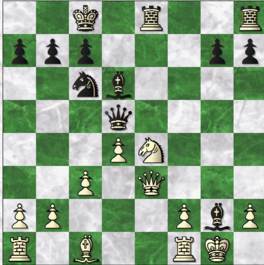
17.Kxg2 Rxe4 allows to answer check with mate - SG. 18.Qh3+ Rg4# ( 0-1 ). It is not often one sees "cross checks" in practical play - AP.
Game 13
This game was played in the Berlin City Tournament.
Siefert- Barav, Israel
Latvian and Elephnat Gambit [C40]
Berlin City Tournament, 20/7/1928
Annotations: Fritz 14
1.e4 e5 2.Nf3 d5 3.d3 dxe4 4.4...Qxd1+ 5.Kxd1 Bg4 6.Nbd2 6...Nc6 7.Bb5 0–0–0 Fritz prefers 7…Nge7 8.Bxc6 bxc6 9.Ke1 f6 10.h3 Bh5 11.Ng1 Bc5 12.f3 Ne7 13.Nb3 Bb6 14.Bd2 f5 15.Bg5 Rde8 16.exf5? Nxf5 17.Ne2 e4 'Piece Play; Black is on a roll' – Fritz.
18.Rf1? a blunder in a difficult position. But after the 18.fxe4 Rxe4 19.g4 Black is still winning – Fritz. 18...exf3 19.gxf3 Ng3 20.Rf2 Bxf2+ 21.Kxf2 Nxe2 22.Be3 Rhf8 23.Kxe2 Rxf3 White resigns ( 0–1 ).
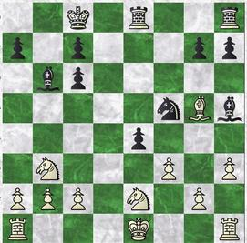
Game 14
This game was played in the Berlin chess league. As usual with Barav, it is an attacking game. It has a remarkable final position.
Barav, Israel - Unknown Nimzo-Indian (E20) S. C. C, [Sports Club Charlottenburg] -- Bewag, league match (2nd board), August 7, 1928. Annotations: Fritz 8 (punctuation) and Shahar Gindi (punctuation and commentary)
20. c6! Qa5 21.Rab1! Barav is determined - SG. 21...Kc7 22.Rxb7+ Kd6 23. Bxf6 Nxf6 24.c5+ Black Resigns ( 1-0 ). The final position deserves a diagram:
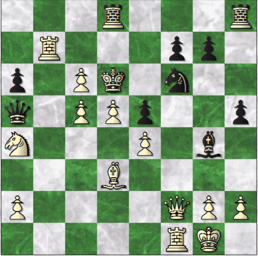
GAME 15 In this game, Barav gains a winning strategic position and begins an attack on the enemy king, culminating with a completely justified sacrifice of a rook to break through the enemy's position. Ripp - Barav, Israel Irregular Opening [A00] Berlin, S. K. Springer, 24.11.1928 Annotations: Fritz 8, Shahar Gindi and Avital Pilpel 1.b4 e6 2.Bb2 Nf6 3.a3 d5 4.Nf3 Nbd7 5.e3 Bd6 6.Nc3? blocking the important c pawn -SG. 6...c6 7.d4 0–0 8.Bd3 e5 Black has more central control and is already better - SG. 9.dxe5 Nxe5 10.Nxe5 Bxe5 now the e5 bishop dominates the b2 bishop - SG. 11.h3 Re8 12.Qf3 Ne4 13.Nd1 Bxb2 14.Nxb2 f5 Barav's trademark move (14...a5) - SG. 15.Bxe4 fxe4 Now Black has a strategically winning position, and immediately begins a dangerous attack - AP.
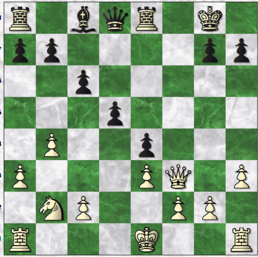
16.Qd1 Qg5 17.Kf1 Rf8 18.Qd4 Be6 19.Nd1 Rf6 20.Rh2 this move is useless for White but it allows Black a nice combination - SG . Raf8 21.Ke2 Rxf2+! A completely justified rook sacrifice - F8.
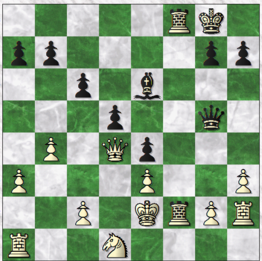
22.Nxf2 Qg3 23.Rf1? a blunder, but even after the relatively better 23. Rah1 Rxf2+ 23. Kd1 White is completely lost - F8. 23...Qxh2
This game was played in the Berlin championship (Verbandmeisterschaft) of 1929, in the qualifying rounds.Only the ending was published. Barav, Israel - Oehrn Berlin championship, 1929, qualifying rounds Source & Annotations: Schachwart, 1929, p. 71. "Chess is all About Swindles"
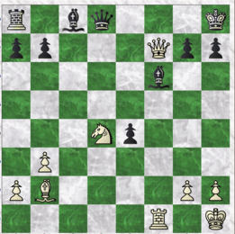
1...Bd7 2.Nc6!? White tries to outwit his opponent. After a quiet continuation, Black would likely have an advantage. 2...Bxc6 3.Rxf6! Bd5 Better was 3...e3 4.Rf1 (4.Rd6 Qg5) 4...Qg8. 4.Qh5 gxf6?? White is still completely clueless. 5.Qg5!
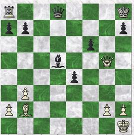
The black queen cannot be saved. Black resigns ( 1-0 ).
Game 17
The following game was played in Berlin, 1929.
Hartmann, Bruno - Barav, Israel
Queen's Gambit Declined [D30]
Berlin, 15/3/1929
Annotations: Fritz 8, Shahar Gindi and Avital Pilpel.
1.d4 d5 2.Nf3 c6 3.e3 Nf6 4.c4 e6 5.Bd3 Nbd7 6.0–0 Ne4 7.Nc3 f5 8.Bxe4? 8.Ne2 White needs to be patient against this sturdy formation - SG. 8...fxe4 9.Ne5 Nxe5 10.dxe5 Qg5?! 10...Bc5 was more natural - SG. 11.f4 Qf5 12.Ne2 Bc5 13.Ng3 Qf7 14.cxd5 cxd5 15.Qe2 0–0 16.Bd2 Bd7 17.Bc3 a6 18.Qd2 Rac8 19.Rf2 g6 20.Rd1 Ba4 21.b3 Bb5 22.Ne2 Qc7 23.Bb4? Bxe2! wins a pawn - SG. 24.Rxe2? 24.Bxc5 leads to massive exchanges and a better, but not winning, position for Black - SG. 24...Rxf4! 25.Qc3 Rf7 26.Ba5 b6
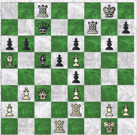
27.b4? Bxe3+ 27...Bd6! - SG. 28.Qxe3 bxa5 29.bxa5 Qc5 Qxa5 was better - F8; but knowing the a5 pawn will be won anyway, Black decided to exchange into a won endgame - SG. 30.Qxc5 Rxc5 31.Rb2 Rxa5 32.Rb6 Rxa2 33.Rxe6 Rff2
An uncommon case of "blind pigs" (two connected rooks on the opponent's 2nd rank) in a masters' game -AP. 34.Rxd5 Rxg2+ 34... e3 is even stronger, threatening Ra1+, but, probably in time trouble, Black played the obvious check - F8 &AP. 35.Kh1 Rxh2+ 36.Kg1 e3 37.Rd7
This threatens mate in one (Rd8#). Black can easily stop this and win by 37...Rhf2, but Barav sees an immediate victory -F8 & AP. 37... Rag2+ 38.Kf1 e2+ and White resigned ( 0-1 ), due to 39.Ke1 Rh1+ 40.Kd2 e1Q+, etc. - F8. White is threatening mate in one move since move 37, but has no time to execute the threat - AP.
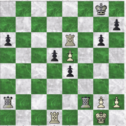
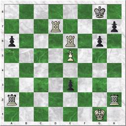
Game 18
Barav, Israel - Wächter, Paul Queen’s Pawn Game (D00) Berlin Chess Association Championship, 1929. Source & Annotations: Vossische Zeitung (VZ) , 26/5/1929, p. 12; Schachwart (SW) vol. 6 no. 6, June 1929, pp. 106-107. "Powerful Piece-Play" [V.Z.] 1 .d4 Nf6 2.e3 d5 3.Bd3 c5 4.c3 e6 5.Nd2 Nc6 6.f4 cxd4 Now Black has an inferior center (VZ); opening the e-file for White, freeing the Bc1 and eliminating the weakness on e3 (SW). 7 .exd4 Bd6 8.Nh3 Original and apparently not bad. White gives up defending e4 but gets a powerful post at e5 (SW). 8... Qc7 a sacrificial combination like, for example, e5 together with with Bxh3 and Qh4+ should not work, although it gives unmistakable practical chance (SW). 9.0–0 a6 10.Qe2 The queen denies the knight the e4 square, which Black had not foreseen when he took on d4 in the 6th move (SW). 1 0... 0–0 11.Nf3 b5 12.Ne5 Bb7 A bishop with no future! (SW). 13.Bd2 Rfe8? (SW).
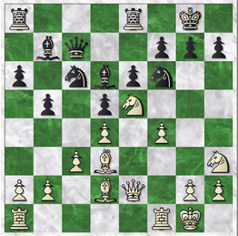
Black should not have given up the defense of f7 with the rook. Now both White knights join the attack on it. 13...Ne4 Is no good: 14.Bxe4 dxe4 15.Ng5 (not 15.Qxe4? Nxe5); but 13...g6 should have been considered, with the idea of Kg7 and Rh8, parrying Ng5 with h6 (VZ). Black plays very carefree. This critically weakens f7. Perhaps with Ne4 a later attempt to stop the attack can be found (SW). 14.Ng5! Very strong; Black loses at least a pawn (SW). 14... Nd8 One should note that the Bb7 and Ra8 should have been freed (VZ). 15.Ng4 The Nf6 defender must be eliminated (VZ). 15...Nxg4
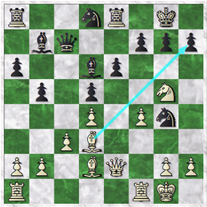
If 15...h6 16.Nxf6+ gxf6 17.Nh7 Be7 18.Qg4+ Kh8 19.Qh5 and wins (VZ). 16.Bxh7+ Kf8 17.Qxg4 g6 Black wants to try to escape through e7, but... 18.Qh4 White prevents it (18... Ke7 19. Ne4+) (SW); threatens 19. Bxg6 fxg6 20. Qh8+ (VZ).
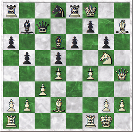
18...Kg7 18...Ke7 19.Ne4+ Kf8 (VZ). 19.Rf3 Rh8 20.Rh3 Bc6 21.f5! (VZ, SW); Barav handles the final attack with compelling elegance (SW). 21...exf5 22.Ne4! not 22. Ne6+ fxe6 23. Bh6 because of Kf7 (SW). 22... Kf8 22...dxe4 23.Bh6+ Kxh7 24. Bf8+ Kg8 25.Qxh8# (VZ). 23.Bh6+ Black Resigns due to 23...Ke8 24. Nf6+ Ke7 25. Nd5+ winning the queen (SW). 1–0
Game 19
This game, against WilhemKoch (brother of Berthold Koch). While the game was drawn, Barav plays with his usual attacking style. The game is a good example of a combination being used, not for mate, but to simplify into a better ending.
Barav, Israel -- Koch, Wilhelm 1. d4 d5, unusual lines [D00] Berlin Chess Association, Summer Tournament, 1931 Source & Annotations: Schachwart, 1931, pp. 190-191, Shahar Gindi, and Avital Pilpel.
1.d4 d5 2.e3 Nf6 3.Bd3 c6 4.Nd2 Bg4 Very questionable. Black counts on 5. Ngf3, but should have continued with Nbd7 and c5 - SW. 5.Ne2! Nbd7 6.f4 e6 7.0–0 Bd6 8.Qe1 Qe7 8...Bxe2 was somewhat better - SW. 9.Ng3 g6 So that in case of 10. h3 the Bishop could move to f5 - SW. 10.e4 dxe4 11.Ndxe4 Bc7 12.Bd2 Bb6 Threatening 13... Bxd4 - SW. 13.c3 Nxe4 14.Nxe4 Bf5 15.Kh1 Nf6 16.Nf2 h5 Black allows his king to remain in the middle -- a dangerous start - SW; Black neglects castling - SG.
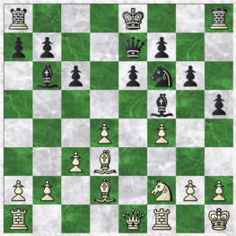
17.a4 a6 18.Qd1 Ng4 19.Bxf5 gxf5 20.Qf3 Qh4 21.Nh3 Qd8 22.Rfe1 Qd5 23.Qe2 Rg8 24.Ng5 Rg7 To allow castling long - SW. If immediately 24... 0–0–0? of course 25. Nxf7 - AP.
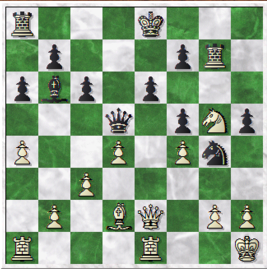
25.h3 Nf6 26.Rad1 Qb3? Why not 26... 0–0–0? The text move proves weak - SW. 27.Qe5? 27.d5!! wins by disconnecting the queen from e6: 27...cxd5 28.Nxe6 or 27...Ne4 28.Nxe4 fxe4 29.dxe6 0-0-0 30.e7 - SG; F14. 27...Bd8 28.c4! Be7 If 28...Qxc4, then comes 29.Qxf5 ; but still it is the lesser evil - SW. 29.d5 cxd5 30.Bc3 Qxc4 allowing a pretty combination - SW.
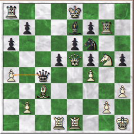
31.Nxe6! fxe6 32.Qxe6 Qc6 The only chance -SW. 33.Bxf6 Qxe6 34.Rxe6 Kf7 34...Kd7 is best answered by 35.Rb6 -SW. 35.Rxe7+ Kxf6 36.Rxg7 Kxg7 37.Rxd5 The smoke clears; white is a pawn up in a rook ending, as a result of his combination - AP; White is winning - SG.
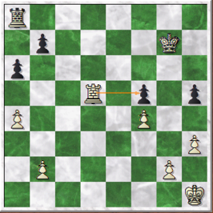
37...Kf6 38.Rd6+ Ke7 39.Rh6 b5 40.Rxh5 Much stronger was 40.a5 ; White should then win easily SW. 40...Ke6 41.Rh6+ Kd5 42.axb5 axb5 43.Rb6 Ra5 43...Kc4 44.Rf6 44.b4?! 44. Kh2! should have been played now - SW; 44.h4, passed pawns must be pushed - SG. 44...Ra1+ 45.Kh2 Kc4 46.Rf6? It was better to immediately advance the pawns (46. g4 etc.) - SW.; three pawns against one, but how advanced are they? - SG. 46...Kxb4 47.Rxf5 Kc4 48.h4 b4 49.Rf8 Ra5 50.Re8 b3 51.Re1 b2 52.Rb1 Kc3 53.Kh3 53.g4 was the last winning chance - SW. 53...Ra1 54.Rxb2 Kxb2 55.Kg4 Kc3 56.Kg5 Kd4 57.h5 drawn ( 0.5-0.5 )
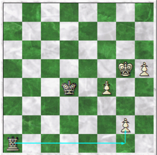
Game 20
This game was published in Marmorosh's Ha'Sachmat (vol. 1 no. 1 p. 12, March/April 1932). It took place, tells us Marmorosh, 'in a tournament in Berlin, 1931'. The actual event was the Summer Tournament of the Berlin Schachgesellschaft Club's summer tournament. As usual, it is an enjoyable attacking game by Barav. Barav, Israel - Braun D00: 1. d4 d5: Unusual lines Berlin Chess Association, Summer Tournament, 1931
Source & Annotations: Schachwart 1931 p. 196 and Shahar Gindi. 'Castling too late' - SW
1.d4 d5 2.e3 Nf6 3. Bd3 c5 4.c3 Nc6 5.f4 e6 6.Nd2 to prevent 6... Ne4 - SW. Bd6 7.Nf3 a6 8.0-0 b5 both sides played sensibly so far. Black refrained from castling being afraid of a kingside attack, but after b5 his king will not find safer place than castling short - SG. 9.Ng5 Bd7 10.Kh1 h6 11.Nf3 b4 12.Ne5 Qa5 Black embarks on a queen's journey without being fully developed -SW. 13.e4! dxe4? If 13... cxd4 14. Nxc6 followed by 15. e5 - SW.; 13...bxc3 is very complicated - SG. 14.Nxe4 Nxe4 15.Bxe4 Qc7 16.dxc5! Bxe5 17.fxe5 bxc3 17...Qxe5 18.Qf3 and Black loses a piece - SG. 18.bxc3 0-0? This loses immediately, but the position is bad in any case - SW.; Black has castled into "safety" but now Barav finishes the game with some fireworks - SG.
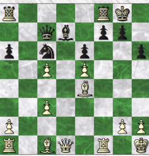
19.Bxh6! Qxe5 19... gxh6 20. Qg4+ and wins due to 21. Rf6 - SW. 20.Bxg7! Kxg7 20... Qxg7 21. Rf3 - SW. 21.Qxg4+ Black resigns ( 1-0 )
Game 21
Played in the Berlin Schachgesellschaft club's summer tournament, 1931. Barav, Israel -- Oppermann Sicilian Dragon [B73] Berlin Chess Association, Summer Tournament, 1931 Source & Annotations: Schachwart , 1931, p. 166 and Shahar Gindi 1.e4 c5 2.Nf3 Nc6 3.d4 cxd4 4.Nxd4 Nf6 5.Nc3 d6 6.Be2 g6 7.Be3 Bg7 8.0–0 d5? This is an error before castling = S. 9.Bb5! Black must lose a pawn either after 9...0-0 or 9...Bd7 10.exd5 - SG.
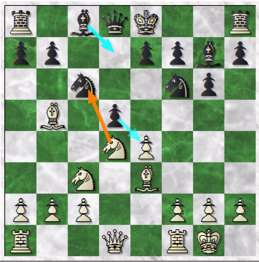
9... Qd7 9...Bd7 would cost a pawn, but would be the lesser evil - SW. 10.exd5 Nxd5 11.Nxd5 Bxd4 desperation, but Black is lost anyway (11.. Qxd5 12. Nxf6!) - SW. 12.Bxd4 0–0 13.Bc5 Re8 14.Re1 Black resigns ( 1–0 ).
Game 22
This game was played in the qualifying Rounds in the Berlin Schachgesellschaft Club's winter tournament, 1931/2. Barav came first in his group (group C), qualifying for the tournament's final, but did not play in it due to his move to Munich.
Barav, Israel - Elstner, Rudolf Sicilian Defense [B40] Berlin Schachgesellschaft Club winter tournament, 1931/2.
Annotations & Source: Schachwart 1932, pp. 43-44 and Shahar Gindi. "The Queen in the Corner"
1.e4 c5 2.Nf3 e6 3.d4 cxd4 4.Nxd4 Nf6 5.Nc3 Bb4 a very sharp opening where e5 followed by Qg4 is objectively best. Barav plays cautiously just to sail through the opening safely and get a chess game. He will create his own complications later - SG. 6.Bd3 not good; better is Sdb5 or Be2 - SW . 6...Nc6 7.Nde2 0–0 8.0–0 a6 Black should have taken the initiative with 8...d5. The Paulsen-variation maneuver he now carries out is of little effect here - SW. 9.a3 Be7 10.Ng3 Qc7 11.f4 d6 Black missed a few opportunities to play d5 and equalize. After 11...d6, it's a very regular Sicilian game - SG. 12.Be3 b5 13.Nh1 To start an attack on the enemy king with g4, Nf2, etc. - SW. 13...Bb7 14.g4?! after these clumsy moves d5 was certainly called for. The "unique" placement of the knight on h1, allows for 12...d5! 13.e5 b4!! - SG. 14...Na5 15.g5 Nd7 16.Qh5 g6 17.Qh6
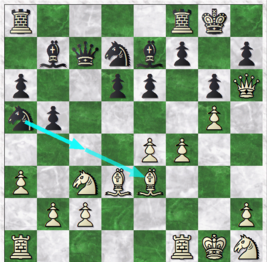
17...Rfe8 18.Rf3 Bf8 19.Qh4 Bg7 20.Rh3 Nf8 21.Nf2 the Nh1 maneuver is now justified- SG. 21...Bxc3? White threatens 22.Ng4, followed by 23.Nf6+ Bxf6 24.gxf6 and the queen penetrates. Black seeks to forestall this plan by bringing his queen to h8, but it would be very unhappy there. - SW.; leaving the Black king's defenses is too high a price for a pawn - SG. 22.bxc3 Qxc3 23.Rd1 Qh8 24.Ng4 Nd7 25.e5! d5 25...dxe5 26.Bxb5 axb5 27.Rxd7 - SW. 26.Nf6+ 2 6.f5! was a nice move typical for Barav that would have ended the game faster after 26...exf5 27.Bxf5 - SG. 26...Nxf6 27.gxf6 h5 Necessary, due to the threat of f5, followed by Bh6-g7 - SW. 28.Qg5 Qh7 29.Be2 Kh8 30.Kf2 If immediately 30.Bxh5 gxh5 31.Rxh5, Black has 31...Rg8! - SW. 30...Rg8
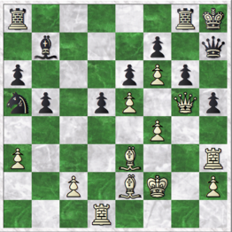
31.Bxh5! gxh5 32.Qxh5 Rg2+ Othewise mate is unavoidable - SW. 33.Kxg2 d4+ Or 33...Qxh5 34.Rxh5+ Kg8 35.Kf2 and 36. Rg1+ cannot be met - SW. 34.Kf2! giving away the bishop with a check just as to not Block Rd1's path to g1 - SG. 34...dxe3+ 35.Kxe3 Nc4+ 36.Kf2 Be4 37.Qg5! Rg8 38.Qxg8+! Black Resigns ( 1–0 ).
Game 23
Moser - Barav, Israel
This game was played in the qualifying Rounds in the Berlin Schachgesellschaft Club's winter tournament, 1931/2.
Latvian and Elephant Gambits [C40]
Berlin Schachgesellschaft Club winter tournament, 1931/2
Annotations & Source: Schachwart 1932, p. 45 and Shahar Gindi
"a5! (a4), b5! (b4), f5! (f4)"
1.e4 e5 2.Nf3 d5 A tactic intended to confuse the opponent. The move is playable; at least, it has no direct refutation - SW. 3.exd5 e4 4.Qe2 Nf6 Sharper is 4...Qe7, because now White can just reply 5. d3 - SW. 5.Nc3 Be7 Sacrifciing two pawns for attacking chances - SW. 6.Nxe4 0–0 Black gives up two pawns for quick development and awkward placing of the White queen - SG. 7.Nxf6+ d3 is safer. White clings so long to his two extra pawns in what follows, that he gets mated - SW.
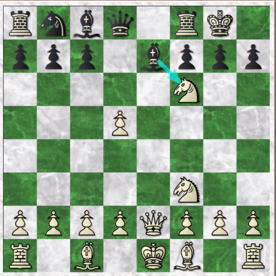
7...Bxf6 8.Qc4 Re8+ 9.Be2 b5! 10.Qd3 10.Qxb5 Ba6 - SW. 10...b4! threatening Ba6 - S. 11.c4 Qe7 12.Qe3 Qd7 13.Qb3 c6 14.dxc6 Drives forward Black's development. White should have attempted d3, and with an early Be3 to finally castle - SW. 14...Nxc6 15.d3 a5! Barav continues to play hyper-aggressively - SG.
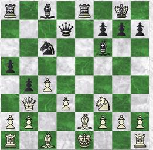
16.Qd1 Also possible is 16.Be3 a4 17.Qc2 a3 18.0–0 axb2 19.Rab1, etc. - SW. 16...Qe7 17.Rb1 a4 18.Be3 a3 19.bxa3 Bc3+ 20.Nd2 20.Kf1 immediately was better - SW.. 20...f5!
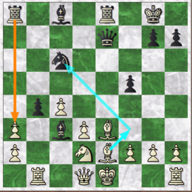
Black of course tries again to disturb the opponent with an unexpected pawn advance SW. 21.Kf1 21.0–0? f4 - SW. 21...Rxa3 Black's initiative and advantage keep growing - SG. 22.Bf3 Ne5 23.Bd5+ Kh8 24.Qc2 Ng4 25.Re1 What else? - SW. 25...f4 26.h3 fxe3 27.hxg4
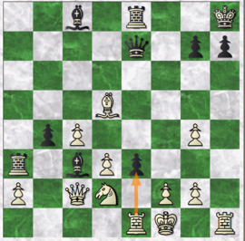
27... Rxa2! A beautiful finish. The rook deflects the queen from protecting d1 - S . 28.Qxa2 exd2! and White Resigns ( 0-1 ), due to 29.Rxe7 d1=Q+, or 29.Rxh7+ Kxh7 30.Be4+ Qxe4! - SW.
Game 24
This game is Barav's most famous: a 12-move combination, which, Ami Barav informs us (and the computer agrees) is completely sound. It was published, inter alia, In:
1. Marmorosh's primer ("Shach-Mat"), ca. 1945.
2. Hon's in his (short-lived) 1946 magazine Shachmat ('chess') (no. 1, game 6)
3. Persitz and Mendelbaum's 1952 & 1958 edition of "Masters' Chess Tournament".
4. BCM 1960 pp. 299-301, with annotations by Persitz .
5. Hon's 1961 book "Chess Endings" (pp. 30-31)
6. Barav's obituary (1979, Shahmat) by Yosha and Mohilever.
All (except Persitz's 1960 ones in the BCM) are in Hebrew. We give here analysis based on Persitz's in-depth English-language annotations (without the by now outdated opening analysis). The game became a bit of a legend among local players; e.g., in Al Ha'Mishmar (Aug. 22nd, 1946, p. 3) we read of a game (Margalit - Ben Artzi, 1-0) where the winner chose the same opening (the Staunton Gambit) "based on the game Rabinovich- Vidor".
Persitz said that "this game is, in many people's estimate (and it is hard to disagree) the most sparklingly brilliant of the combinative games played in our country. Its place in the world's chess literature is secure, and justly so". The game's original score-sheet is published in the testimonials section of this web site. Barav, Israel - Vidor, A. Dutch Defense, Staunton Gambit (A82) Lasker Club "Yovel" championship, 05.02.1944
Source & Annotations: Based on Raafi Persitz, BCM, 1960, pp. 299-301. 1.d4 f5 2.e4 fxe4 3.Nc3 Nf6 4.Bg5 e6 5.Bxf6 Qxf6 6.Nxe4 Qg6 or 6...Qh6 at once 7.Ng3 Be7? a trite move that gives black a difficult game. Correct was 7...Bd6 8.Bd3 Qh6. 8.Bd3 Qf7 even now the queen would be happier on h6. 9.Nf3 Nc6 Black cannot permit Ne5. Preventing this with d6 is out of the question, as it would make the king's pawn vulnerable. 10.c3 a many-sided move: stops Nb4, relieves the Nf3 from protecting d4, discourages castling in view of 10...0-0 11.Qc2 h6 (11...g6 12.h4!) 12.Bg6 Qg5 (12...Qf6 13.Nh5) 13.Nh5 Qd6 14.Bh7+ Kh8 15.Nxg7! Kxg7 16.Qg6+ Kh8 17.Bg8!! and wins. 10...b6 11.Qe2 Bb7 12.0–0 seeing that Black still cannot castle on the KS, and sooner or later will have to castle on the QS, White prepares to storm it with his pawns. 12...0–0–0 13.a4! Bf6? there is no time for such moves. For better or worse, Black must play 13...g5, and this applies to the next two moves as well. 14.b4 h5? the "threat" of h4 will only drive the white knight to a more commanding post. 15.a5 Black is making little progress, while White's attack is already on its way. 15...h4? 16.Ne4 h3 17.g3 put ting an end to all Black's hopes of counterplay. Realizing that his attack had reached a standstill, Black now diverts his attention to the endangered Qs, but his efforts are insufficient. 17...Qh5 18.axb6 axb6 this leaves the a-file wide open, but 18...cxb6, weakening d6, is even worse. 19.Ba6 Nb8 forced as White was threatening mate in three, commencing with 20. Bxb7+ . 20.Bxb7+ Kxb7 21.Qc4!
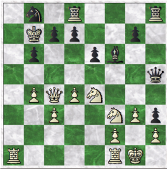
with the devastating threats of 22.Ra7+ and 22.Nc5+. The stage is set for the fireworks.
21...Qd5 Black prepares to interpose with the queen at b7. O ther defenses are of no avail:
(d) 21...Rc8 22.Nc5+ Kc6 (22...bxc5 23.Qb5#) 23.R(a)e1! and Black is lost: 23...Qxf3 24.b5+, 23...bxc5 24.Ne5, etc .
Nevertheless, White can still sacrifice effectively.
22.Ra7+! Kxa7 23.Qxc7 Qb7 or 23...Ka6 24.Ra1+ Kb5 25.Nd6+, winning the queen and the game. 24.Ra1+ Na6 Has White's attack been repelled? (25.Rxa6+ Kxa6 26.b5+ Ka7)? 25.Rxa6+! Kxa6 26.Nc5+! the concluding point of the combination beginning with 22. Ra7+. If now 26...bxc5 27.Qa5#. 26...Kb5 a fugitive and a vagabound shalt thou be in the earth... 27.Nxb7 Ra8 Blacks' first threat (28...Ra1+) but his king is exposed and he's behind in material. White can win as he pleases. 28.Nd6+ quickest. 28...Ka4 29.Qc4 threatening 30.Qa2. 29...Ka3 30.Nd2 Kb2 31.Qb3+ Black resigns ( 1-0 ) because after 31...Kc1, 32.N(either)c4, mate cannot be avoided, see diagram:
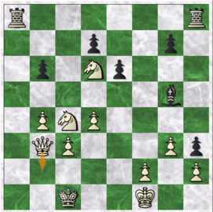
'One of the most brilliant combinations even made in the country' -- Mohilever (quoted in Yosha's article).
Game 25
A game between Barav and Kniazer, played in the "Lakser" club's "Yovel" ("aniversary" -- 20 years after its founding) tournament of Feb. 1944. In that tournament Barav did excellently, finishing second (10/15) after Porat. Barav,Israel - Kniazer, Israel Yosef Lakser Chess club "Yovel" tournament, 22.02.1944 Alekhine’s Defense (B02) Annotations: Fritz 8, Shahar Gindi, and Avital Pilpel 1.d4 Nf6 2.Nf3 b6 3.Bg5 Ne4 4.Bh4 Bb7 5.Nbd2 g6 6.e3 Bg7 7.Nxe4 Bxe4 8.Bc4 0–0 9.c3 d5 10.Bd3 Nd7 11.Bxe4 dxe4 12.Nd2 f5 13.g4 t his typical Barav move is actually the modern computers' top recommendation - SG. Qe8 14.gxf5 Rxf5 15.Qb3+ Kh8 16.Qe6 Rh5 17.Bg3 c5 18.Nxe4 Nf8 19.Qg4 Qb5 20.Qe2 cxd4 21.cxd4 Qd5 22.f3 Re8 23.0–0 Nd7 24.Rad1 Rf8 25.Nc3 Qa5 26.e4 b5 27.Nd5 e5? After this move, Fritz notes, Black is lost - F8 and AP.
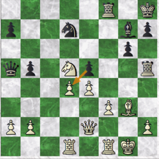
28.dxe5 n ow White's e and f pawn will steamroll Black - SG. 28...Nxe5 29.f4 Nc4 30.b4 Qa631. e5? 31.f5! Now Barav seems stuck going back and forth, not knowing what to do for a few moves- SG. 31...Qc6 32.Qe4 Qe6 33.Nc3 a6 34.Nd5 Rhf5 35.Kg2 Qc6 36.Rfe1 g5? White hasn't made any progress in the last few moves and needs to prove he can do something with his extra pawn, but Kniazer blunders - SG. Black resigned ( 1-0 ), not continuing after the adjournment - AP.
Game 26
This game was played in the 1945 Palestine championship, where Barav won 3rd place, winning accolades as 'the "stormy petrel" of [Palestinian] chess players (see Edward Winter's "Chess Notes" no. 8191 ), who 'delights in brilliant combinations' (go to testimonials for full details).
Barav, Israel - Aloni, Itzhak Queen's Gambit, Cambridge Springs Defense (D52) Palestine Chess Championship, 1945, rd. 1, "Lasker" Chess Club, Tel Aviv, Feb. 1945 Source: Palestine Post, March 16th, 1945, p. 6 Annotations: Barav in the Palestine Post, Fritz 8 , Shahar Gindi, Avital Pilpel. 1.d4 Nf6 2.c4 e6 3.Nc3 d5 4.Bg5 Nbd7 5.e3 c6 6.Nf3 Qa5 Cambridge Springs variation of the Queen's Gambit Declined - SG. [This variation] has the advantage of avoiding the Queen being pinned by Bg5 and giving Black the opportunity of playing Ne5 and winning an important pawn - Barav. 7.Nd2 Ne4?! 7...Bb4 was played by all the top players in the beginning of the 20th century - SG. The usual continuation is 7...Bb4 8.Qc2 PxP 9.BxN NxN 10.Nd2xP attacking the queen, etc. - Barav. 8.Ndxe4 dxe4 9.Bh4 Bb4 10.Qc2 f5 11.Be2 e5 12.0-0 exd4 13.exd4 0-0 14.c5 Tightens hold on the Q's wing, opens diagonal to KB, and gives support to the QB when it moves to d6. - Barav 14...Bxc3 15.bxc3 Nf6 16.Bc4+ Kh8 17.Bg3 Nd5 18.Bd6 Rf7 w alks into a pin to protect b7, but the alternatives seem even worse - SG. 19.Bb3 Be6 20.c4 Nf6 21.Qe2 there is no way through for White, but energetic play (21.Rfd1 h6 22.d5 Bd7) was better than the game. We see here that when facing good defense Barav loses the thread of the game for a few moves - SG. 21...Re8 22.Rac1 h6 23.h3 Kh7 24.Be5 Bc8 25. f4
25...exf3 e.p 26.Rxf3? 26.Qxf3 - SG. 26...Ne4? 26...Ng4 - SG. 27.Bc2 Qd2 If 27...Qxa2 28.Qd1 threetning capture of the N. - Barav. 28.Qf1 Rxe5 Black gives up some material to get rid of White's powerful bishop, but objectively not justified - SG. 29.dxe5 Qd4+ 30.Kh1 Qxe5 31.Bxe4 Qxe4 32.Qd3 Qh4 33.Rcf1 Be6 34.Rf4 Re7 35.Re1 Qf6 36.Qd6 g5?? a blunder in a difficult position - F8. 37.Rd4? 37.Rxe6! wins outright - F8; both players were probably short on time - AP. 37... Re7 38.Qd8 Kg7 39.Kg1 and Black forfeited on time in a lost position - AP. It was clear the unlucky overstepping of the time limit merely shortened the game ... a foregone conclusion after the 28th move -- Barav ( 1-0 ).
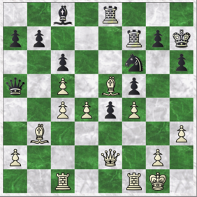
Game 27
A game between Barav and Kniazer, the veteran player who among other achievements had played for Israel in the Olympiad of 1954 in Amsterdam. The game is typical of Barav's style: everything for the attack, including exposing his own king. Kniazer's defense (according to computer analysis by Fritz 8) is not the best, but that is part of the attacker's advantage! Barav, Israel - Kniazer, Israel Yosef Nizmo-Indian, 4. E3 (E40)
Palestine Championship 1945 ("Lasker" club, Tel Aviv), 5th round, 10.03.1945
Source & Annotations: Palestine Post June 16th, 1945, p. 6 with Barav's annotations; and Shahar Gindi. 1.d4 Nf6 2.c4 e6 3.Nc3 Bb4 4.e3 Nc6 5.Nf3 0–0 6.Qc2 Re8 7.a3 Bf8 8.b4 e5 9.dxe5 Nxe5 10.Nxe5 Rxe5 11.Bb2 d6 12.Bd3 Rg5?! A very serious error. Black's rook gets into deep water and is immobilized for the rest of the game - Barav; this ambitious excursion of the rook when all Black's other pieces are so passive is unjustified and Barav punishes Black for that -SG. 13.f4! Rh5 14.0–0–0 a5 15.h3! White is saying: "there is no attack just a stranded rook!" - SG. 15...axb4 16.axb4 Qe8 17.e4 d5 18.cxd5 Bxb4 19.g4 The rook is now completely isolated -Barav. 19...Rh4 20.Nb5 Barav leaves the rook ridiculously placed on h4 and switches to the queenside - SG. 20...Ra5 21.Qc4 Be7 22.Qxc7 Ra6 23.Kb1 Bd7 24.Qxb7 Ra4
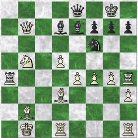
25.d6 Bd8 Best under the circumstances, because if 25...Rb4 (seemingly a sound defense) 26.dxe7 Bxb5 27.Bxb5 Rxb5 28.Qc8 winning in all variations - Barav. 26.Nc7 Qf8 27.e5 what a position! White is totally dominating and Black has two supposedly active rooks in symmetrical placements on the side of the board - SG. 27...Ne8 28.Nd5 Be6 29.Ne7+ Kh8 30.f5 Ba2+ 31.Kc2 Bc4 32.Bxc4 Rxc4+ 33.Kb3 Black resigned (1-0).
Game 28
Barav, Israel – Smiltiner, Shlomo Caro-Kann (B10)
Palestine Championship, Lasker Club, Tel Aviv, 11th round.
Source: Palestine Post , May 4th, 1945, p. 6
Annotations: Palestine Post and Fritz 8 (in parenthesis) 1. e4 c6 2. Nf3 d5 3. Nc3 dxe4 4. Nxe4 Nf6 5. Ng3 although the usual continuation is NxN, White decides not to exchange so as to be able to concentrate his attack on the kingside" - P. Post 5...Bg4 6. Bc4 e6 7. O-O Nbd7 8. d4 Bd6 (8...h5 9. h3 Bxf3 10. Qxf3 =) 9. h3 Bxf3 10. Qxf3 Qc7 11. c3 Nb6 12. Bb3 h6 13. a4 " After 12...h6, it is extremely unlikely he will castle on the K. side, as he then loses a pawn and defenses in front of the K. White therefore anticipates casting on the Q. side by preparing to attack on the a file." - P. Post 13...Rd8 (13... Nbd7 14. Bc2 is better) 14. Re1± Kf8 "As now casting is inadvisable on either side, and in view of the threat Nc5, Black decides to centre the QR and move the K out of danger." = - P. Post. 15. Ne4 Nxe4 16. Rxe4 Kg8 17. Bd2 Nd5 18. Rae1 Qe7 19. c4 Nf6 20. R4e2 Bb8 (20... Bb4?! 21. Bc3 Bxc3 22. bxc3 Qc7±) 21. Bc3 h5? (21... Qd6 22. g3 Bc7 +-) "A seemingly sound move, preparing Qd6 or Qc7, and then h4 with mate threat, or at least weakening the h file. In point of fact, this moves proves the undoing of Black" - P. Post.
22. d5! (Clearance to allow c3-e5) cxd5 (22... exd5 23. Rxe7) 23. cxd5 Nxd5? (better is 23... e5 24. Bxe5 Bxe5 25. Rxe5 Qd6, but Black is still lost) 24. Bxd5 Qd6 25. Re5 (Fritz prefers 25. Rxe6, with a quicker win) 25... exd5 26. Re8+ "White is now taking full advantage of Black's 21...h5, and initiates a beautiful attack which settles the issue in a few moves. Black cannot play RxR, because 27.RxR+ Kh7 28.QxP+ Qh6 29. RxR+ KxR 30 QxQ+ and mate next move." - P. Post. Kh7 27. Qxh5+ Qh6 28. Rxh8+ Rxh8 29. Qxf7 Qg5 (if 29... d4 30. Bxd4 Rd8 +-)
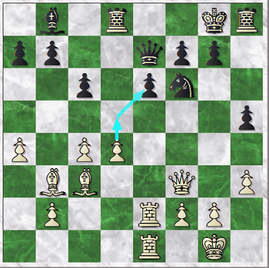
30. Bxg7! Rg8 "If 30...QxB 31.Qh5+ and wins in a few moves" - P. Post. 31.Bf6+ Rg7 32.Bxg7 Black resigned ( 1-0 ).
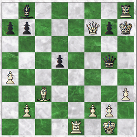
Game 29
Barav, Israel – Yosha, Avshalom Caro-Kann (B10) Palestine Championship, Lasker Club, Tel Aviv, June 1945 (12th round)
Source: Palestine Post , 29 6 1945, p. 6
Annotations: Shahar Gindi and Barav
1. d4 d5 2. Nc3 Nf6 3. Bg5 e6 4. e4 dxe4 5. Bxf6 Qxf6 6. Nxe4 Qd8 7. Nf3 White is better developed 7…Nd7 8. Bd3 Be7 9. Qe2 Nf6 10. O-O-O White is planning a KS attack in case Black castles KS. 10…Nd5 11. Ne5 Nf4? This just helps White with his attack, "forcing" the queen where she wants to go, as well as losing the one developed piece. 12. Qg4 Nxd3+ "Black's defensive tactics are countered by White's strong attack, so he is forced to exchange N against B, although White thereby secures a strong attack." - Barav. 13. Rxd3 Bf6 14. Rhd1 14. Rf3! wins directly. 14…Qxd4?? is not allowed due to 15. Nxf6+. 14...O-O 15. Rf3 White has a strong attack which should win.
15…Be7 16. Qh5?! "Not so good in view of the king's position" - Barav. Loses most of White's advantage. 16. Rg3! g6 17. Qf4 Kg7 18. Rh3 wins quickly. 16... f5! Best. White, however, is still better. 17. Rh3 h6 18. Nc5 18. Qg6? fxe4 19. Rxh6 Bg5+ "and White's attack practically peters out." - Barav. 18... b6 19. Ncd3 Bb7?! 19... Qxd4 20. Nc6 Qf6! Bring the queen to the defense. 20. Rg3 Rf6 "Almost forced due to the cramped position. It closes the Bishop's diagonal and allows White to launch the final attack." - Barav. 21. Nf4 Qe8 22. Qe2 Naturally, White does not want to exchange queens. 22…g5? After this weakening move, Black is again completely lost. 23. h4 Rf8 24. Nxe6 f4 25. Rc3 White cashes in. 25…Bd6 26. Nxf8 Qxf8 27. hxg5 Black resigns ( 1-0 ).
Game 30
A game against Tziner, a player in the "Reti" club.
12.Nxd5! Bd6 12...cxd5? 13.Bc7 wins the queen. 13.Bxd6 Nxd6 14.Nf4 Nf6 15.Qb3+ Kh8 16.Rfd1 Qe7 17.Ne5 Be6 18.Qa3 Bf7? the final mistake in a lost position. 19.Qxd6! and Black resigned ( 1-0 ) due to 19...Qxd6 20.Nxf7+.
Game 31
Barav, Israel – Smiltiner, Shlomo Neo-Gruenfeld (D71) Caro-Kann (B10) "Reti" Club championship, Tel Aviv, 4 June 1956
Source: Barav's Archives
Annotations: Nechemia Kasimov
1.d4 Nf6 2.c4 g6 3.g3 Bg7 4.Bg2 d5 5.cxd5 Nxd5 6.Nf3 c5 Black attacking White's center with Pawn c5. 7.dxc5 Qa5+ 8.Nfd2 Nc7 Black Knight retreated to c7. It was better to defend the Knight with 8…Be6. It was tempting to capture pawn c5 while still defending the Knight by 8…Qxc5, but after 9.Nb3 Qb4+ 10.Bd2 Qd6 11.0-0 White would gain an advantage. (11...Bxb2 will be refuted with 12.Qc2!). 9.O-O Qxc5 10.Nb3 Qc4 11.Na3 Qg4 12.Na5! White attacking Pawn b7 12...Qb4 3.N3c4 O-O 14.a3 White could have played a stronger move – 14.Bd2! and after 14...Qb5 15.a4 Qa6 16.Rc1 Nc6 17.Nxc6 Bxc6 18.Na5 Black would not survive. 1 4...Qb5 15.a4 Qa6 16.Qb3 Nc6 Black succeeded to equalize. 17.Nxc6 bxc6 18.Qb4 Be6 19.Na5 Bd5 20.e4 Rab8 21.Qe1 Bc4 22.Nxc4 Qxc4 23.Bf4 White attacking Knight on c7. 23...e5 Another option for Black was 23… Rb7 in order to protect the Knight. 24.Be3 Rxb2 25.Bxa7 Ra8 26.Qe3 Ne6 27.a5 Rb3 The Black Rook is attacking the White Queen. If the Queen will retreat to d2 or e1 the White Bishop on a7 will not be protected. 28.Rfc1! The White Queen is still protecting Bishop a7. After 28...Rxe3 29.Rxc4 Rb3 30.Be3 White will have a great positional advantage. 28...Qb5 29.Qb6 Bh6 30.Rcb1 Nd4 31.Bf1 Rxb1 32.Rxb1 Qa4 33.Qb7
33...Rxa7?? Black missed an opportunity to save the game: 33...Nf3+ 34.Kh1 (34.Kg2 Qxe4! 35.Qxa8+ Kg7 36.Rb8 Nd4+ 37.Kg1 Nf3+) Qxe4! (attacking the White Rook on b1) 35.Qxa8+ Kg7 36.Qb8 Nh4+ 37.f3 Qxf3 38.Kg1 Be3+ 39.Bxe3 Qxe3+ 40.Kf1 Qf3+ 34.Qxa7 Nf3+ 35.Kh1 Qxe4 (too late, now White can protect the Rook b1 with check and then protect his King with 37.Bg2) 36.Qb8+ Kg7 37.Bg2 White’s advantage is decisive. 3 7...Qe2 38.Qb2? 38.a6! Qxa6 39.Bxf3 would not leave to Black any chance to survive. 38...Bd2 39.a6 Ne1 40.a7 Nd3
41.Qa1?? Instead, 41.Qb6! would have easily won the game. On 41...Nxf2+ he would play 42.Qxf2 (trading Queen for Knight) Qxf2 43.a8Q (Queening a Pawn). White would have a Rook advantage. Draw agreed ( 0.5-0.5 ) because of 41….Nxf2+ 42.Kg1 Qe3 43.Rb3 Nh3+ 44.Kh1 Nf2
Game 32
Smiltiner, Shlomo - Barav, Israel
Sicilian Defense: Richter-Rauzer Variation (B60)
"Reti" Club Championship, Tel Aviv, 18 November 1957
Source: Barav's Archives
Annotations: Nechemia Kasimov
1.e4 c5 2.Nf3 Nc6 3.d4 cxd4 4.Nxd4 Nf6 5.Nc3 d6 6.Bg5 e6 7.Be2 a6 8.O-O h6 9.Bh4 Qc7 10.Nb3 b5 11.Rc1? Passive move by White. 11...Bb7 12.f3 Be7 13.Qd2 b4 14.Bxf6 Bxf6 15.Nd1 a5 16.Qe1 a4 17.Nd2 O-O Black pieces dominate the Queen side of the board. 18.Kh1 a3 19.b3 Ne7
20.c4 In a difficult position Black decided to render the game complicated. 20...bxc3 21.Nxc3! White sacrifices a Knight in order to lure the Black Bishop to c3. 21...Bxc3
22.Nb1! The Black Bishop is pinned by Rook c1 and attacked by Rook, Knight and Queen. 22...d5 After 22...Bxe1 23.Rxc7 two Black Bishops and Knight will be under attack. White will capture one of them and equalize the game. 23.Qxc3 White regained the sacrificed piece. 23...Qxc3 24.Rxc3 Better was 24.Nxc3 to protect the Pawn e4. 24...dxe4 25.Rc7 exf3 26.gxf3 Ra7! 27.Rxe7 Bxf3+ 28.Rxf3 Rxe7 The game has entered the endgame stage with equal chances. 29.b4 Rc8 30.Nxa3 e5 31.Nc4 e4 32.Rf1 Rec7 33.Nd6 Rd8 34.Nxe4 Rc2 35.Ng3 Rxa2 36.Bc4
36...Rb2? Losing the Pawn f7, better was 36...Ra7. 37.Rxf7 Kh8 38.b5 Rd4 39.Be2 Rdd2 40.Re7 Kg8 41.Kg1 Kf8 42.Re4 g6 43.Kf1 Rdc2 44.Re5 Kg7 45.Rd5 h5 Black's strong defense eliminated the White’s advantage and the game equalized. 46.Rd7+ Kh6 47.h4 Rc1+ 48.Kf2 Rc4 49.Rd6 Kg7 50.Kf3 Rxh4 51.Bd3 Rh3 52.Rxg6+ Kf7 Draw agreed ( 0.5-0.5 )
Game 33
Barav, Israel - Smiltiner, Shlomo
Nimzo-Indian Defense: Normal Variation. Bishop Attack (E47)
"Reti" club championship, Tel Aviv, 3 February 1958
Source: Barav's Archives
Annotations: Nechemia Kasimov
1.d4 Nf6 2.c4 e6 3.Nc3 Bb4 4.e3 O-O 5.Bd3 c5 6.Nge2 d5 7.O-O Nc6 8.cxd5 exd1.d4 Nf6 2.c4 e6 3.Nc3 Bb4 4.e3 O-O 5.Bd3 c5 6.Nge2 d5 7.O-O Nc6 8.cxd5 exd5 9.a3 Bxc3 10.bxc3 c4 11.Bc2 Re8 12.f3 White is preparing to move Pawn e3 to e4. 12...h5 13.Qe1 b5 14.Qf2 Qc7 15.Nf4 g6? Weakens the position of the black King. White's position is much better. 16.Qg3 Qe7 17.Rb1 Bd7 18.Qg5 Rad8
19.e4! Strong attacking move. Black's position is falling apart. 19...dxe4 20.fxe4 Nxe4 21.Qxe7 Rxe7 22.Nd5
The White Knight attacks Black Rook e7. Any move of Black Rook will result in a loss of Knight: 22...Re6 (or 22...Re8) 23.Bxe4. (23...Rxe4? Nf6+ will lose the Rook) 22...f5 23.Nxe7+ Nxe7 24.Bxe4 fxe4 25.Bg5 Re8 26.Bxe7 Better was 26.Rf6. It would penetrate Black’s position and eliminate counter-play. 26...Rxe7 27.Kf2? Suddenly Black got counter-play. 27.Rf6 would keep big advantage of White. 27...e3+ 28.Ke1 a6 29.Rb2 Kg7 30.h3? White had to play 30.Rf3 and later attack the Pawn on e3 with the other Rook from e2. 30...Bf5 31.Rf3 Bd3 32.Re2? White is trading a Rook for a Black Bishop, assuming his protected passing Pawn will provide him chances to win the game. Unfortunately for him it is not the case in this Rook endgame. White could choose from several other moves (32.Ra2, 32.a4, 32.g3) in order to keep its advantage, but anyway Black would get a chance to survive. 32...Bxe2 33.Kxe2 a5 34.Rxe3 Rb7 Now there is a drawn endgame on the board. 35.Re5 b4 36.axb4 axb4 37.cxb4 Rxb4 38.Rc5 f6 39.g4 h4 40.g5+ Ke6 41.Kf3 Draw agreed ( 0.5-0.5)
Game 34
Barav was well known as an excellent tactician (see the ' testimonials ' part of this web site). He therefore played many 'crime and punishment' games: where a slip by the opponent lead to a quick demise, usually involving a sacrifice or two. We already saw some such examples. Here is one more -- played against the well known Israeli player Zadok Domnitz, then a rising star (he won the Israeli 1961/2 championship soon after). Domnitz, Zadok - Barav, Israel Four Knight's Defense [C48] Lasker - Reti chess clubs league match, 2/7/1960, 3rd board. Annotations: Fritz 8, Shahar Gindi,and Avital Pilpel 1.e4 e5 2.Nf3 Nf6 3.Nc3 Nc6 4.Bb5 Bc5 5.0–0 d6 6.d4 exd4 7.Nxd4 Bd7 8.Be3 Ng4 9.Nxc6? 9. Na4. - F8; move 9 and White is lost - SG.
9... Qh4! instead of an "automatic" recapture - AP. 10.h3 Nxe3 11.fxe3 bxc6 12.Ba4 0–0 13.Kh2 d5 14.Bb3?
14... Bd6+ 15.Kg1 Bxh3! An unanswerable piece sacrifice - AP. White Resigns ( 0–1 ). If 16.gxh3, then 16... Qg3+ 17.Kh1 Qh2#, and any other reply loses as well - F8.
The following two games, against Fuss and Smilitiner, are, so far as we can tell, from Barav's last public tournament. They were played in the "Yovel" tournament of 1964, i.e., the Reti club championship, held that year in honor of Moshe Marmorosh's 40 years of chess activity in Palestine. The tournament was extensively reported in the press, and, for example, after 8 rounds Barav had 5 points (Kol Ha'am, May 14th 1964, p. 4). The tournament had a total of 11 rounds, Barav finishing with ca. 6 points. The Fuss game in particular is a typical Barav game, full of sacrifices for a beautiful mating attack. Game 35 Fuss - Barav, Israel Queen's Gambit Declined [D37] Tel Aviv, "Yovel" Tournament, Reti Chess Club. Rd. 3. April 1964 Source & Annotations: Shachmat, April 1964, p. 4, and Shahar Gindi, 1.d4 Nf6 2.c4 e6 3.Nc3 d5 4.Bf4 Be7 5.e3 0-0 6.Nf3 c6 7.h3 Nbd7 8.c5 Better is 8. Bd3 and casting. SH. 8...b6 9.b4 bxc5 10.bxc5 Ne4 11.Nxe4 dxe4 12.Nd2? e5! 13. Bg3 exd4 14.exd4 Qa5 15.Qc2 Bf6 16.Kd1 horrible - SG. Nxc5 17.Bd7 Bxd4 18.Bxf8 Kxf8 19.Nc4 Qd8 20.Qd2 Qf6 21.Rc1 Ba6 22.Kc2 Rb8 23.Rb1 Rd8 24.Nb2 24...Bd3+ 25.Bxd3 exd3+ 26.Kd1 Bc3 27.Qc1 Qxf2 White's pieces are pathetically placed on the first and second row. Black has 3 pieces in the 6th and 7th row. mate is coming - SG. 28.Qxc3 Qe2+ 29.Kc1 d2+ White resigns ( 0-1 ). The final position is worth a diagram:
Game 36
Smiltiner, Shlomo - Barav, Israel English Opening [A27] Tel Aviv, "Yovel" Tournament, Reti Chess Club. Rd. 7. May 1964 Source & Annotations: La'Merchav, 8 May 1964, Shahar Gindi, and Avital Pilpel. 1.c4 e5 2.Nc3 Nc6 3.g3 g6 4.Bg2 Bg7 5.e3 d6 6.Nge2 Nge7 7.0-0 0-0 8.f4 Be6 9.Nd5 Rb8 10.Nec3 a6 11.Qa4?! the queen has no place on the queen's side - SG. 11...Bd7 12.b4 Nf5 13.Qb3 exf4 14.gxf4 Nh4 15.Rf2 Na7 threatening c6, trapping the knight - H. 16. c5? 16.e4 was necessary, followed by Ne3, even if it weakens the d4 square - LM 16...dxc5 17.bxc5 Be6 White's pieces are too loose and he loses the knight - SG. 18.Bb2 Nxg2 19.Rxg2 c6? 19...Bxd5 20.Nxd5 Bxb2 21.Qxb2 Qxd5 wins a piece - LM. (True, but Barav found another pretty way to win - AP.) 20.Qb6 Bxd5 21.e4 Bxc3 22.Bxc3 Bxe4 23.Qxa7 Bxg2 24.Kxg2
The smoke clears. Black has a clearly winning position, an exchange and pawn up without any compensation for White. Also, White's queen is out of play and Black starts a decisive final attack -- AP. 24...Qd5+ 25.Kg1 Rbe8 26.Rf1 Re2 27. Rf2 Re1+ 28.Rf1 Rxf1+ 29.Kxf1 Qf3+ 30.Kg1 Re8 and Black won ( 0-1 ).
GAME 37 We put the game last as its date is unknown. Hon (see testimonials ) noted that Barav was an expert blitz player. Here is one such blitz game -- Against Itzchak Aloni, one of Israel's strongest players of the era: Barav, Israel -- Aloni, Itzchak
French Tarrasch (C05) Blitz game, Lasker Chess Club, Tel Aviv (Date?) Annotations: Fritz 8, Shahar Gindi, and Avital Pilpel 1.e4 e6 2.d4 d5 3.Nd2 Nf6 4.e5 Nfd7 5.Bd3 c5 6.c3 Nc6 7.Ne2 Be7 8.Nf3 0–0 9.h4 f6? move 9 and Black is totally lost. From this point on, White conducts his attack beautifully and flawlessly - SG. 10.Nf4 Nb6?
11.Ng5! the first sacrifice - AP. 11... fxg5 Black is still lost after 11... f5 12.Ngxe6 or 11... g6 12.Nxh7, but now there is a forced mate - F8. 12.Bxh7+ the second sacrifice - AP. 12... Kxh7 12... Kf7 13.Qh5+; 12... Kh8 13. Qh5 - F8. 13.hxg5+ Kg8 14.Rh8 + the third sacrifice - AP. 14... Kxh8 15.Qh5+ Kg8 16.g6 Black resigned ( 1–0 ). It's mate in two - F8.